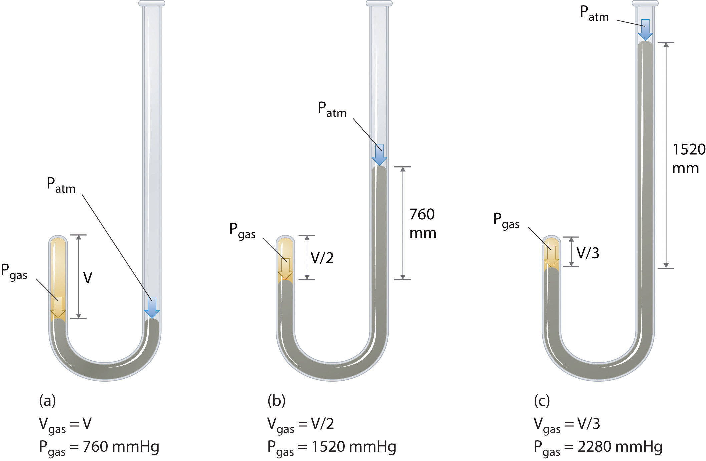
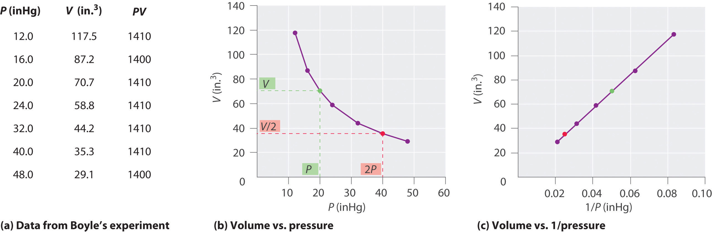
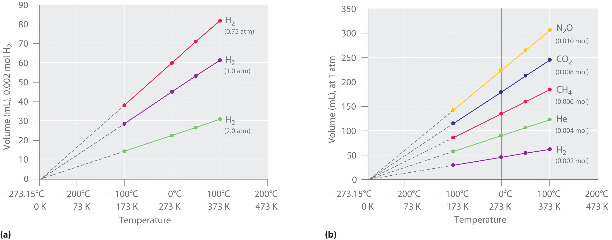
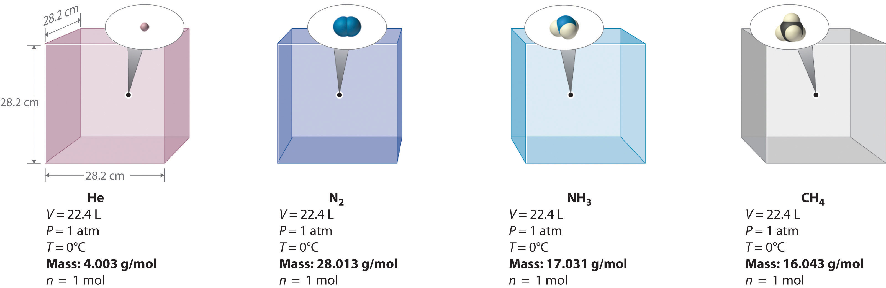
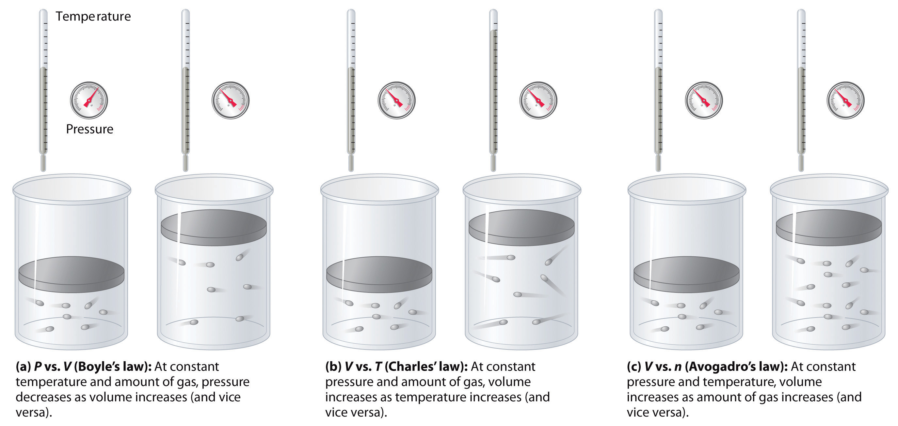

Early scientists explored the relationships among the pressure of a gas (P) and its temperature (T), volume (V), and amount (n) by holding two of the four variables constant (amount and temperature, for example), varying a third (such as pressure), and measuring the effect of the change on the fourth (in this case, volume). The history of their discoveries provides several excellent examples of the scientific method as presented in Chapter 1 "Introduction to Chemistry".
As the pressure on a gas increases, the volume of the gas decreases because the gas particles are forced closer together. Conversely, as the pressure on a gas decreases, the gas volume increases because the gas particles can now move farther apart. Weather balloons get larger as they rise through the atmosphere to regions of lower pressure because the volume of the gas has increased; that is, the atmospheric gas exerts less pressure on the surface of the balloon, so the interior gas expands until the internal and external pressures are equal.
Boyle, the youngest (and 14th!) child of the Earl of Cork, was an important early figure in chemistry whose views were often at odds with accepted wisdom. Boyle’s studies of gases are reported to have utilized a very tall J-tube that he set up in the entryway of his house, which was several stories tall. He is known for the gas law that bears his name and for his book, The Sceptical Chymist, which was published in 1661 and influenced chemists for many years after his death. In addition, one of Boyle’s early essays on morals is said to have inspired Jonathan Swift to write Gulliver’s Travels.
The Irish chemist Robert Boyle (1627–1691) carried out some of the earliest experiments that determined the quantitative relationship between the pressure and the volume of a gas. Boyle used a J-shaped tube partially filled with mercury, as shown in Figure 10.6 "Boyle’s Experiment Using a J-Shaped Tube to Determine the Relationship between Gas Pressure and Volume". In these experiments, a small amount of a gas or air is trapped above the mercury column, and its volume is measured at atmospheric pressure and constant temperature. More mercury is then poured into the open arm to increase the pressure on the gas sample. The pressure on the gas is atmospheric pressure plus the difference in the heights of the mercury columns, and the resulting volume is measured. This process is repeated until either there is no more room in the open arm or the volume of the gas is too small to be measured accurately. Data such as those from one of Boyle’s own experiments may be plotted in several ways (Figure 10.7 "Plots of Boyle’s Data"). A simple plot of V versus P gives a curve called a hyperbola and reveals an inverse relationship between pressure and volume: as the pressure is doubled, the volume decreases by a factor of two. This relationship between the two quantities is described as follows:
Equation 10.5
PV = constantFigure 10.6 Boyle’s Experiment Using a J-Shaped Tube to Determine the Relationship between Gas Pressure and Volume
(a) Initially the gas is at a pressure of 1 atm = 760 mmHg (the mercury is at the same height in both the arm containing the sample and the arm open to the atmosphere); its volume is V. (b) If enough mercury is added to the right side to give a difference in height of 760 mmHg between the two arms, the pressure of the gas is 760 mmHg (atmospheric pressure) + 760 mmHg = 1520 mmHg and the volume is V/2. (c) If an additional 760 mmHg is added to the column on the right, the total pressure on the gas increases to 2280 mmHg, and the volume of the gas decreases to V/3.
Figure 10.7 Plots of Boyle’s Data
(a) Here are actual data from a typical experiment conducted by Boyle. Boyle used non-SI units to measure the volume (in.3 rather than cm3) and the pressure (in. Hg rather than mmHg). (b) This plot of pressure versus volume is a hyperbola. Because PV is a constant, decreasing the pressure by a factor of two results in a twofold increase in volume and vice versa. (c) A plot of volume versus 1/pressure for the same data shows the inverse linear relationship between the two quantities, as expressed by the equation V = constant/P.
Dividing both sides by P gives an equation illustrating the inverse relationship between P and V:
Equation 10.6
where the ∝ symbol is read “is proportional to.” A plot of V versus 1/P is thus a straight line whose slope is equal to the constant in Equation 10.5 and Equation 10.6. Dividing both sides of Equation 10.5 by V instead of P gives a similar relationship between P and 1/V. The numerical value of the constant depends on the amount of gas used in the experiment and on the temperature at which the experiments are carried out. This relationship between pressure and volume is known as Boyle’s lawA law that states that at constant temperature, the volume of a fixed amount of a gas is inversely proportional to its pressure., after its discoverer, and can be stated as follows: At constant temperature, the volume of a fixed amount of a gas is inversely proportional to its pressure.
Hot air rises, which is why hot-air balloons ascend through the atmosphere and why warm air collects near the ceiling and cooler air collects at ground level. Because of this behavior, heating registers are placed on or near the floor, and vents for air-conditioning are placed on or near the ceiling. The fundamental reason for this behavior is that gases expand when they are heated. Because the same amount of substance now occupies a greater volume, hot air is less dense than cold air. The substance with the lower density—in this case hot air—rises through the substance with the higher density, the cooler air.
The first experiments to quantify the relationship between the temperature and the volume of a gas were carried out in 1783 by an avid balloonist, the French chemist Jacques Alexandre César Charles (1746–1823). Charles’s initial experiments showed that a plot of the volume of a given sample of gas versus temperature (in degrees Celsius) at constant pressure is a straight line. Similar but more precise studies were carried out by another balloon enthusiast, the Frenchman Joseph-Louis Gay-Lussac (1778–1850), who showed that a plot of V versus T was a straight line that could be extrapolated to a point at zero volume, a theoretical condition now known to correspond to −273.15°C (Figure 10.8 "The Relationship between Volume and Temperature").A sample of gas cannot really have a volume of zero because any sample of matter must have some volume. Furthermore, at 1 atm pressure all gases liquefy at temperatures well above −273.15°C. Note from part (a) in Figure 10.8 "The Relationship between Volume and Temperature" that the slope of the plot of V versus T varies for the same gas at different pressures but that the intercept remains constant at −273.15°C. Similarly, as shown in part (b) in Figure 10.8 "The Relationship between Volume and Temperature", plots of V versus T for different amounts of varied gases are straight lines with different slopes but the same intercept on the T axis.
In 1783, Charles filled a balloon (“aerostatic globe”) with hydrogen (generated by the reaction of iron with more than 200 kg of acid over several days) and flew successfully for almost an hour. When the balloon descended in a nearby village, however, the terrified townspeople destroyed it. In 1804, Gay-Lussac managed to ascend to 23,000 ft (more than 7000 m) to collect samples of the atmosphere to analyze its composition as a function of altitude. In the process, he had trouble breathing and nearly froze to death, but he set an altitude record that endured for decades. (To put Gay-Lussac’s achievement in perspective, recall that modern jetliners cruise at only 35,000 ft!)
The significance of the invariant T intercept in plots of V versus T was recognized in 1848 by the British physicist William Thomson (1824–1907), later named Lord Kelvin. He postulated that −273.15°C was the lowest possible temperature that could theoretically be achieved, for which he coined the term absolute zero (0 K)The lowest possible temperature that can be theoretically achieved; it corresponds to −273.15°C..
We can state Charles’s and Gay-Lussac’s findings in simple terms: At constant pressure, the volume of a fixed amount of gas is directly proportional to its absolute temperature (in kelvins). This relationship, illustrated in part (b) in Figure 10.8 "The Relationship between Volume and Temperature", is often referred to as Charles’s lawA law that states that at constant pressure, the volume of a fixed amount of gas is directly proportional to its absolute temperature (in kelvins). and is stated mathematically as
Equation 10.7
Charles’s law is valid for virtually all gases at temperatures well above their boiling points. Note that the temperature must be expressed in kelvins, not in degrees Celsius.
Figure 10.8 The Relationship between Volume and Temperature
(a) In these plots of volume versus temperature for equal-sized samples of H2 at three different pressures, the solid lines show the experimentally measured data down to −100°C, and the broken lines show the extrapolation of the data to V = 0. The temperature scale is given in both degrees Celsius and kelvins. Although the slopes of the lines decrease with increasing pressure, all of the lines extrapolate to the same temperature at V = 0 (−273.15°C = 0 K). (b) In these plots of volume versus temperature for different amounts of selected gases at 1 atm pressure, all the plots extrapolate to a value of V = 0 at −273.15°C, regardless of the identity or the amount of the gas.
We can demonstrate the relationship between the volume and the amount of a gas by filling a balloon; as we add more gas, the balloon gets larger. The specific quantitative relationship was discovered by the Italian chemist Amedeo Avogadro, who recognized the importance of Gay-Lussac’s work on combining volumes of gases. In 1811, Avogadro postulated that, at the same temperature and pressure, equal volumes of gases contain the same number of gaseous particles (Figure 10.9 "Avogadro’s Hypothesis"). (This is the historic “Avogadro’s hypothesis” introduced in Chapter 1 "Introduction to Chemistry".) A logical corollary, sometimes called Avogadro’s lawA law that states that at constant temperature and pressure, the volume of a sample of gas is directly proportional to the number of moles of gas in the sample., describes the relationship between the volume and the amount of a gas: At constant temperature and pressure, the volume of a sample of gas is directly proportional to the number of moles of gas in the sample. Stated mathematically,
Equation 10.8
This relationship is valid for most gases at relatively low pressures, but deviations from strict linearity are observed at elevated pressures.
For a sample of gas,
V increases as P decreases (and vice versa)
V increases as T increases (and vice versa)
V increases as n increases (and vice versa)
Figure 10.9 Avogadro’s Hypothesis
Equal volumes of four different gases at the same temperature and pressure contain the same number of gaseous particles. Because the molar mass of each gas is different, the mass of each gas sample is different even though all contain 1 mol of gas.
The relationships among the volume of a gas and its pressure, temperature, and amount are summarized in Figure 10.10 "The Empirically Determined Relationships among Pressure, Volume, Temperature, and Amount of a Gas". Volume increases with increasing temperature or amount but decreases with increasing pressure.
Figure 10.10 The Empirically Determined Relationships among Pressure, Volume, Temperature, and Amount of a Gas
The thermometer and pressure gauge indicate the temperature and the pressure qualitatively, the level in the flask indicates the volume, and the number of particles in each flask indicates relative amounts.
Boyle showed that the volume of a sample of a gas is inversely proportional to its pressure (Boyle’s law), Charles and Gay-Lussac demonstrated that the volume of a gas is directly proportional to its temperature (in kelvins) at constant pressure (Charles’s law), and Avogadro postulated that the volume of a gas is directly proportional to the number of moles of gas present (Avogadro’s law). Plots of the volume of gases versus temperature extrapolate to zero volume at −273.15°C, which is absolute zero (0 K), the lowest temperature possible. Charles’s law implies that the volume of a gas is directly proportional to its absolute temperature.
Sketch a graph of the volume of a gas versus the pressure on the gas. What would the graph of V versus P look like if volume was directly proportional to pressure?
What properties of a gas are described by Boyle’s law, Charles’s law, and Avogadro’s law? In each law, what quantities are held constant? Why does the constant in Boyle’s law depend on the amount of gas used and the temperature at which the experiments are carried out?
Use Charles’s law to explain why cooler air sinks.
Use Boyle’s law to explain why it is dangerous to heat even a small quantity of water in a sealed container.
A 1.00 mol sample of gas at 25°C and 1.0 atm has an initial volume of 22.4 L. Calculate the results of each change, assuming all the other conditions remain constant.
A 1.00 mol sample of gas is at 300 K and 4.11 atm. What is the volume of the gas under these conditions? The sample is compressed to 6.0 atm at constant temperature, giving a volume of 3.99 L. Is this result consistent with Boyle’s law?